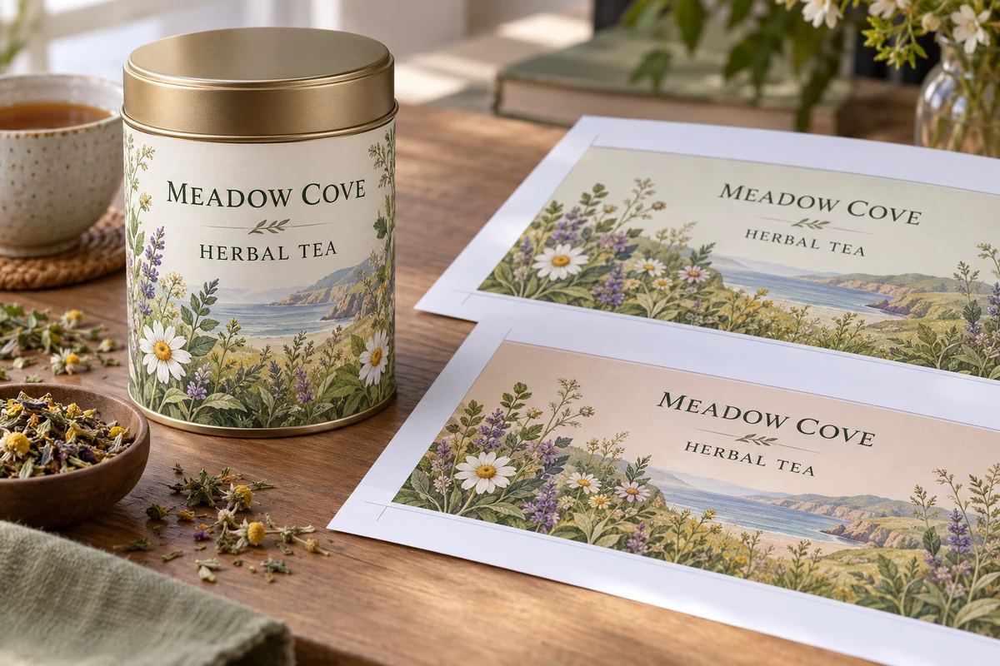

The English label is approved and the designer is asked to add another language. The translated copy is longer, a warning wraps differently and a small product distinction disappears when space becomes tight. The layout problem now conceals a content decision nobody clearly owns.
Approve the source and translation before treating the multilingual artwork as ready for production. Give each language a responsible reviewer, preserve the exact approved text and resolve space constraints through an explicit decision. The designer should not have to rewrite regulated or product-defining copy to make it fit.

Identify the market and approval roles
List the intended market, languages and label components. Ask the responsible market or regulatory owner which information and language requirements apply. This article does not determine the legal requirements for an unspecified country or product.
Separate the source-copy owner, translator, language reviewer, designer and final production approver. One person may hold several roles, but the approval scope should remain clear. A translator's delivery is not automatically regulatory approval, and a printer's content proof is not a certification of meaning.
The allergen-copy guide addresses one sensitive content area. Use an appropriately qualified reviewer for the actual product and market rather than infer requirements from a generic label example.
Freeze the source before expanding the artwork
Give the source copy a revision and identify which SKUs it covers. If the English statement changes after translation begins, trace that change to every affected language. A shared spreadsheet is useful only if it clearly distinguishes current approved text from superseded drafts.
Keep product names, units, identifiers and variable placeholders identifiable. Ask the language reviewer to explain any item intentionally left unchanged. Do not let a search-and-replace operation alter a brand, quantity or code format without review.
The multi-SKU guide traces shared copy changes across products. Multilingual control adds a language dimension to that map, so each affected cell needs a known state.
Use a language approval matrix
| Content element | Source reference | Language/reviewer | Artwork check |
|---|---|---|---|
| Product identity | Approved wording and SKU | Exact accepted translation or retained name | Correct product and prominence |
| Ingredients/allergens | Responsible approved source | Market-qualified review | No omission or unintended alteration |
| Instructions | Approved process wording | Reviewed meaning and sequence | Readable complete text |
| Quantity/units | Controlled values and format | Applicable local presentation review | Correct value and symbol |
| Variable fields | Defined placeholders and data rules | Localized labels if required | Longest relevant output fits |
| Final release | Versioned text set | Named approvals and open items | Matching production PDF revision |
This matrix is a coordination asset. It does not provide approved translations or establish compliance. Keep the underlying reviewer decisions and applicable sources with it.
Make the layout carry the approved content
Test the final text in the intended panel at actual size. Include the longest relevant SKU wording and all required language combinations. Do not approve the shared template only with the shortest product name.
Where copy does not fit, escalate the choice: change panel size, adjust component architecture, revise the package layout or obtain authorized wording changes. Reducing type or deleting words is not a purely cosmetic choice when legibility or meaning matters.
The label-layout guide addresses content capacity. Multilingual artwork should use that same discipline while recognizing that different languages can create distinct line lengths and typographic needs.
Check the production file, not only the translation document
After placement, compare the artwork against the approved language set. Review line breaks, special characters, punctuation, reading order and any missing text. A translation can be correct in a document and wrong in the exported PDF through substitution, clipping or font handling.
Ask the printer and designer to confirm the supported font and file-preparation method. Do not assume that outlining every text object is the right solution for every workflow. Preserve an editable controlled source and identify the exact production file supplied.
If a proof is corrected, record whether the change affects language content, layout or both. Send the relevant scope back to the appropriate reviewer instead of asking purchasing to approve a foreign-language correction it cannot assess.
Keep hypothetical examples out of customer claims
For a hypothetical tea tin, adding a second language might require a wider back panel while leaving the front branding unchanged. Another product might need an additional component. Those possibilities illustrate decisions; they do not establish a standard multilingual format or a legal requirement.
Use actual approved product copy for a production project. Do not fill a visual mockup with invented ingredients, certifications or country-specific statements and later treat the artwork as ready to print.
Reconcile reviewer comments without losing approved text
When two reviewers return different corrections, identify the content owner who resolves them. Keep the agreed wording in the controlled language set before changing the artwork. Do not let the designer assemble a third version from fragments of incompatible comments. The final comparison should use the resolved text and identify the person who accepted its meaning.
Close the revision loop before ordering
Reconcile the text matrix, artwork set and quantity schedule by SKU. Mark any language still awaiting approval. If one market is ready and another is pending, separate their release boundaries rather than declare the whole range approved.
Keep earlier versions accessible as history while preventing them from being mistaken for current files. Record who can authorize the next translation change and how the printer will identify the released version on the order.
Discuss a multilingual-label layout with the target market, language list, approved text status, label dimensions and SKU schedule. Identify the reviewer responsible for unresolved wording. The form opens an email draft; review it and attach the controlled text and artwork through email or the listed WhatsApp route.